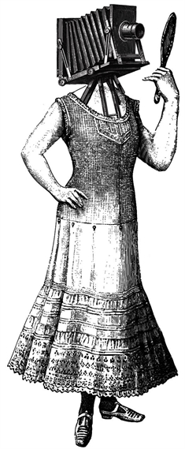

PHANTASME
"Le seul moyen de se délivrer d'une tentation, c'est d'y céder. Résistez et votre âme se rend malade à force de languir ce qu'elle s'interdit." Oscar WILDE

Le fantasme est un scénario imaginaire où le sujet est présent et dans lequel figure, de façon plus ou moins déformée par des processus défensifs, l'accomplissement d'un désir et, en dernier ressort, d'un désir inconscient. Il comprend toutes les idées, images, pensées ou sensations qui traversent notre esprit et notre corps quand nous sommes éveillés. Il est la représentation des désirs et se distingue du rêve. Derrière ce mot figure pour le commun des fantasmes sexuels, mais cela englobe également des fantasmes narcissiques, qui concernent alors le moi. Par ailleurs, certains fantasmes peuvent être conscients, et il s'agit ici des rêveries diurnes tandis que d'autres sont inconscients : ils s'expriment dans ce cas à travers les rêves et les symptômes névrotiques. Les fantasmes sont avant tout des formations de l'imaginaire.
L'illusion fantasmé est un mécanisme de connaissance de notre psyché et de nos réactions face à la vie, par conséquent, les entendre c’est apprendre à nous connaître. Les fantasmes, comme les rêves, font partie du matériel dont l'hypnologue peut se servir dans la thérapie. Leurs usages en accompagnement thérapeutique est ainsi à valoriser car nous sommes dirigés, inhibés ou conditionnés par eux et ils se traduisent dans beaucoup de nos comportements. Par ailleurs, les fantasmes permettent aussi de déceler notre niveau de maturation individuel.
La fantasmagorie est une activité biopsychique dont la finalité conditionne l’être. Comme le rêve, c'est un ensemble de représentations cryptées, mises en images, en provenance de notre inconscient et qui, en court-circuitant la censure, nous fait prendre conscience de nos désirs inconscients ou nous fait parvenir un message. C’est pourquoi, à partir de nos fantasmes, nous pouvons entendre nos désirs, nos souvenirs, nos traumatismes et surtout qui nous sommes ou voulons être.
Les fantasmes ont pour premier objet de créer un état de plaisir précédant toute perception ou tentent de recréer la perception d’un objet extérieur qui a été à l’origine d’une satisfaction. Ils ont pour second objet de nous protéger et de nous construire en mettant en place des éléments de différenciation entre l'imaginaire et le réel. Toutefois, dans cette fonction protectrice il n’est pas rare de voir se profiler une attitude défensive. Par exemple, pour tromper un besoin de la réalité objective qui se présente et neutraliser les tensions qui en découlent, nous évoquerons les souvenirs de plaisir de l’ordre du "déjà passé", d’une réalité subjective. Ce mécanisme est mis en place pour leurrer la réalité objective. Nous utilisons ainsi les fantasmes soit pour nous protéger, soit pour nous consolider.
Le comportement défensif qui constitue la fonction du fantasme est absolument nécessaire tant que nous ne disposons pas d’une autonomie suffisante pour résoudre nos tensions liées à nos frustrations. De fait, quand certains fantasmes ne sont pas réalisables, cette fonction porte en elle la dimension soit pathologique du fantasme, soit du fantasme compensatoire. Le procédé de défense et de régulation, s’il n’est en son temps abandonné, en perdurant, utilisera un système auto-leurrant pour maintenir la relation hors de la réalité. Dès lors, la tentative illusoire de la réalisation hallucinatoire du désir ne servira qu’à se tenir à distance de la réalité.
L'illusion fantasmé est un mécanisme de connaissance de notre psyché et de nos réactions face à la vie, par conséquent, les entendre c’est apprendre à nous connaître. Les fantasmes, comme les rêves, font partie du matériel dont l'hypnologue peut se servir dans la thérapie. Leurs usages en accompagnement thérapeutique est ainsi à valoriser car nous sommes dirigés, inhibés ou conditionnés par eux et ils se traduisent dans beaucoup de nos comportements. Par ailleurs, les fantasmes permettent aussi de déceler notre niveau de maturation individuel.
La fantasmagorie est une activité biopsychique dont la finalité conditionne l’être. Comme le rêve, c'est un ensemble de représentations cryptées, mises en images, en provenance de notre inconscient et qui, en court-circuitant la censure, nous fait prendre conscience de nos désirs inconscients ou nous fait parvenir un message. C’est pourquoi, à partir de nos fantasmes, nous pouvons entendre nos désirs, nos souvenirs, nos traumatismes et surtout qui nous sommes ou voulons être.
Les fantasmes ont pour premier objet de créer un état de plaisir précédant toute perception ou tentent de recréer la perception d’un objet extérieur qui a été à l’origine d’une satisfaction. Ils ont pour second objet de nous protéger et de nous construire en mettant en place des éléments de différenciation entre l'imaginaire et le réel. Toutefois, dans cette fonction protectrice il n’est pas rare de voir se profiler une attitude défensive. Par exemple, pour tromper un besoin de la réalité objective qui se présente et neutraliser les tensions qui en découlent, nous évoquerons les souvenirs de plaisir de l’ordre du "déjà passé", d’une réalité subjective. Ce mécanisme est mis en place pour leurrer la réalité objective. Nous utilisons ainsi les fantasmes soit pour nous protéger, soit pour nous consolider.
Le comportement défensif qui constitue la fonction du fantasme est absolument nécessaire tant que nous ne disposons pas d’une autonomie suffisante pour résoudre nos tensions liées à nos frustrations. De fait, quand certains fantasmes ne sont pas réalisables, cette fonction porte en elle la dimension soit pathologique du fantasme, soit du fantasme compensatoire. Le procédé de défense et de régulation, s’il n’est en son temps abandonné, en perdurant, utilisera un système auto-leurrant pour maintenir la relation hors de la réalité. Dès lors, la tentative illusoire de la réalisation hallucinatoire du désir ne servira qu’à se tenir à distance de la réalité.
Le fantasme s’interpose entre la pulsion et sa réalisation. Il est chargé des expériences passées, donc en relation avec les souvenirs. Quand le schéma ne peut pas se mettre en place harmonieusement, les fantasmes et les symptômes vont devenir un système de dialogue avec le sujet et le monde extérieur. Le fantasme devient une mise en scène d’un désir qui ne peut se réaliser. Si symptôme il y a autour du fantasme, il va permettre une forme d’accomplissement du désir. Le symptôme devient la transcription dans la réalité du fantasme, opération qui sera augmentée par les symboles présents dans le monde extérieur. Notre évolution personnelle dépend de notre capacité à mettre en acte de façon harmonieuse, ou à sublimer nos désirs réprimés. Toute répression, toute censure, tout interdit exagéré bloquent inutilement la croissance de l’être humain. La liberté d’expression et de réalisation des désirs a une fonction biologique et sociale positive.
Sexologiquement, une différence est faite entre fantasmes et fantaisies érotiques. Les fantaisies érotiques (images fugitives, rêves éveillés, scénarios érotiques) utilisent des images pour obtenir de façon imaginaire des satisfactions parfois difficiles à réaliser dans la réalité. En effet, tous les fantasmes ne sont pas réalisables. Pour que le désir sexuel ne s’éteigne pas, il a besoin en plus du plaisir obtenu lors des rapports sexuels, de stimulants imaginaires. Les fantasmes et les fantaisies érotiques entretiennent le désir sexuel, canalisent les désirs “fous”, permettent le jeu avec l’impossible et l’invraisemblable et compensent les manques de réalité. Ils sont nécessaires à l’équilibre psychosexuel, car ils diminuent la frustration. Les fantasmes font partie de la vie sexuelle et même de la vie tout simplement. En clair, ils entretiennent le désir sexuel. Les fantasmes érotiques, qui sont à la fois cause et conséquence du bon fonctionnement de la sexualité, sont le reflet de l’érotisme individuel.
Ainsi, les fantasmes, sont le compromis entre la réalité extérieure et les désirs intérieurs, et donnent une indication sur le degré d’adaptation qui existe entre un passé non satisfaisant, un présent inadéquat et un futur incertain. Pour synthétiser, les fantasmes représentent une partie du système inconscient et sont l’expression d’une tentative de résolution de la problématique inconsciente.
Sexologiquement, une différence est faite entre fantasmes et fantaisies érotiques. Les fantaisies érotiques (images fugitives, rêves éveillés, scénarios érotiques) utilisent des images pour obtenir de façon imaginaire des satisfactions parfois difficiles à réaliser dans la réalité. En effet, tous les fantasmes ne sont pas réalisables. Pour que le désir sexuel ne s’éteigne pas, il a besoin en plus du plaisir obtenu lors des rapports sexuels, de stimulants imaginaires. Les fantasmes et les fantaisies érotiques entretiennent le désir sexuel, canalisent les désirs “fous”, permettent le jeu avec l’impossible et l’invraisemblable et compensent les manques de réalité. Ils sont nécessaires à l’équilibre psychosexuel, car ils diminuent la frustration. Les fantasmes font partie de la vie sexuelle et même de la vie tout simplement. En clair, ils entretiennent le désir sexuel. Les fantasmes érotiques, qui sont à la fois cause et conséquence du bon fonctionnement de la sexualité, sont le reflet de l’érotisme individuel.
Ainsi, les fantasmes, sont le compromis entre la réalité extérieure et les désirs intérieurs, et donnent une indication sur le degré d’adaptation qui existe entre un passé non satisfaisant, un présent inadéquat et un futur incertain. Pour synthétiser, les fantasmes représentent une partie du système inconscient et sont l’expression d’une tentative de résolution de la problématique inconsciente.
EN RELATION

DISSOCIATION
IMAGINAIRE
OSER
COUPLE